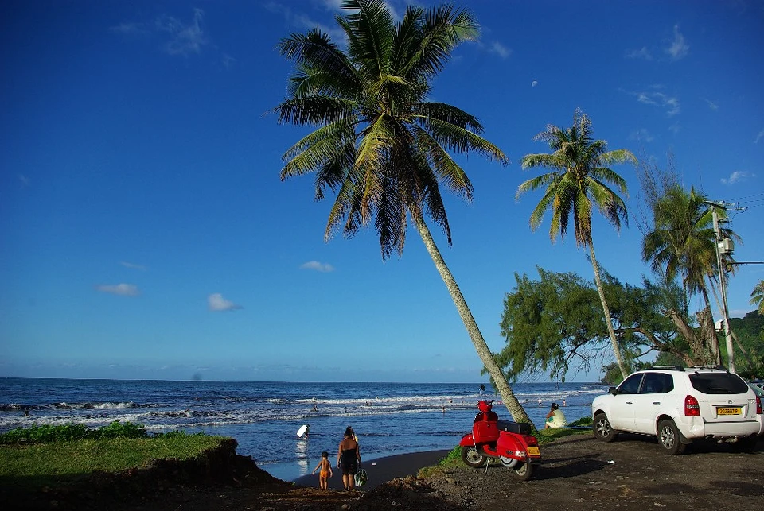
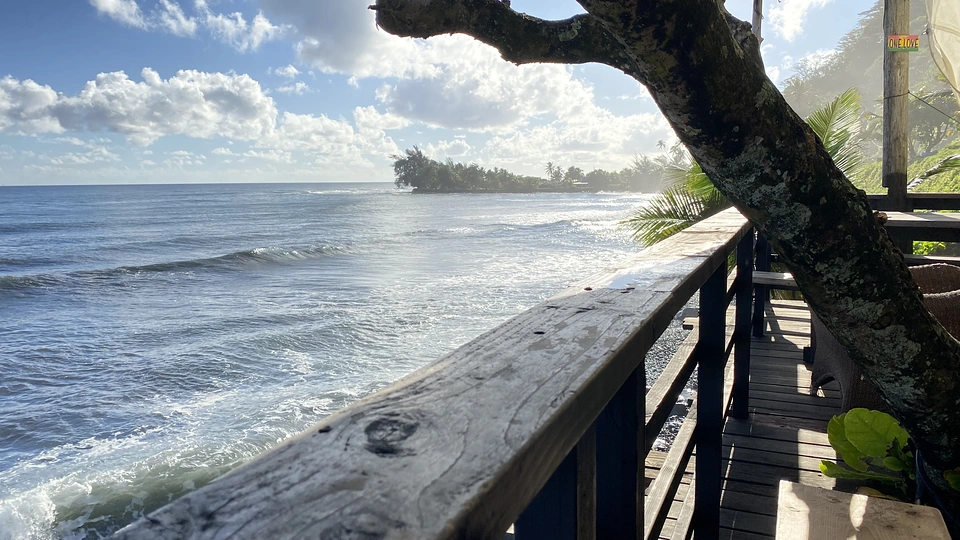

Beginner Surf Spots
Beginner LevelStarting your surfing journey in Tahiti? These two spots offer the perfect conditions for beginners. With gentle waves, sandy bottoms, and forgiving conditions, Orofara and Papenoo Bay are ideal places to catch your first waves and build confidence in the water.

Orofara
A sheltered beach with small, rolling waves perfect for learning the basics. The sandy bottom makes wipeouts safe and the consistent waves help you practice your pop-up.

Papenoo Bay
This beautiful bay offers mellow waves and stunning scenery. The wide beach provides plenty of space to practice, and the friendly local surf community welcomes beginners.